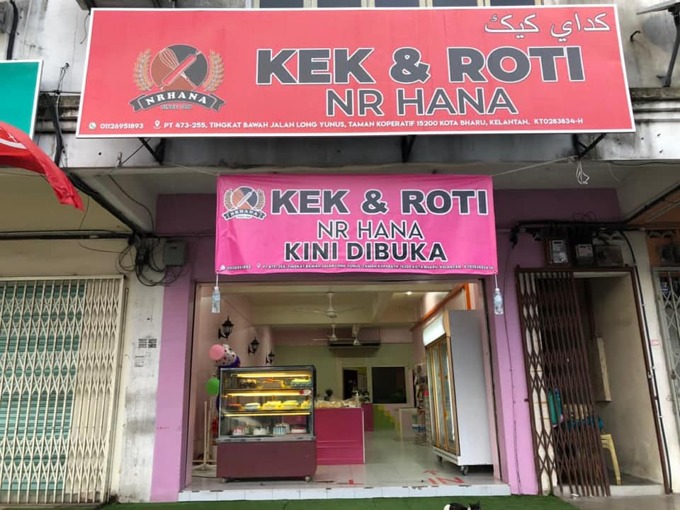

| KEROPOK SIRA CAP MENARA |
NRHANA KEK & ROTI |
|
 |
| Location: Taman Sepakat, 16800 Pasir Puteh, Kelantan |
Location: 554, Jalan Sekolah Kamil, Pasir Puteh, 16800 Pasir Puteh, Kelantan |
| While waiting for SPM results, I worked here for a while. |
I worked here for a few months after I quit my first job. |
Job descriptions:
- Make finished product packaging work.
- Responsible for production products.
- Assist in the cleaning of the operation area.
- Perform other duties directed by employers.
|
Job descriptions:
- Helping and carrying out the work of making cookies, cakes and other tasks as directed.
- Maintain and clean manufacturing machines and equipment after completion of manufacturing.
- Packing cookies into a container.
|